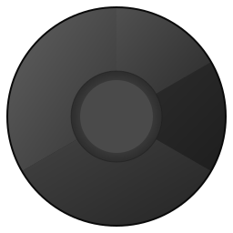

🌐 Antidetect Browser Icons
Chrome-style monochromatic design in grey/black tones
Main Application Icon
512×512 pixels
Installer, desktop shortcuts, main app icon.
Full detail with gradients and shadows.
Full detail with gradients and shadows.

Medium Icon
256×256 pixels
Taskbar, window icon, alt+tab.
Optimized for medium displays.
Optimized for medium displays.
Small Icon
64×64 pixels
File associations, small buttons.
Essential elements only.
Essential elements only.
System Tray Icon
22×22 pixels
System tray, notification area.
Uses currentColor, adapts to theme.
Uses currentColor, adapts to theme.
System Tray - Theme Adaptation
Automatic color adaptation using currentColor
Light Theme

Dark Theme
Chrome-style design with 3 segments (120° arcs) + central circle
Monochromatic grey/black gradients for professional appearance
© 2026 Antidetect Browser Launcher